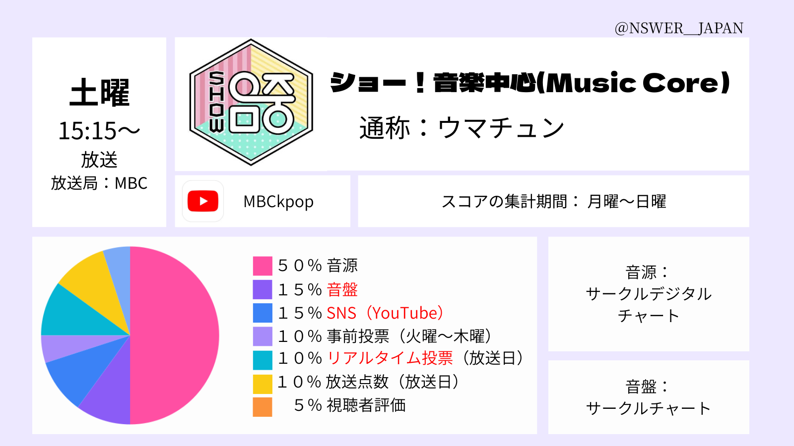

Show! Music Coreの投票方法とスコア配分をまとめています。
放送：土曜 15:15 KST

上の画像で、この番組の配点バランスを確認できます。詳しい投票方法や使用アプリは下のボタンから進んでください。配分の赤い文字のところは、日本からでも貢献できる項目です。
他の番組との違いをまとめて確認できます。
投票期間と放送時間を一覧で確認できます。
YouTube / Spotify / Apple Music などの応援方法を確認できます。